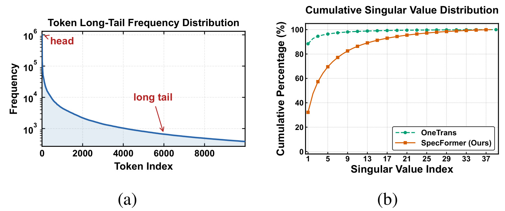
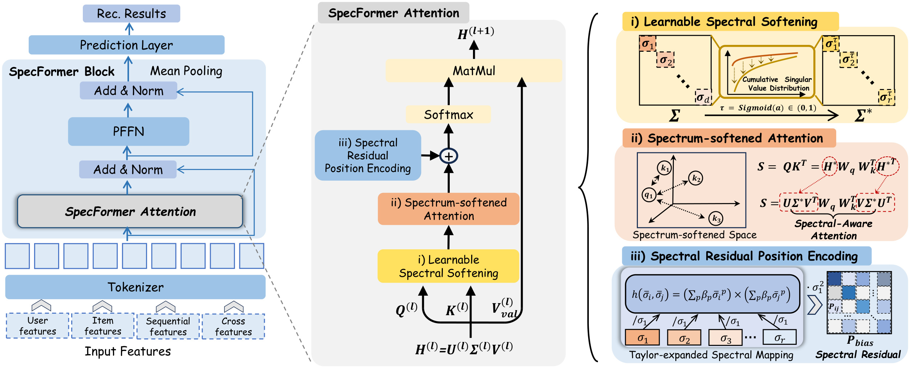
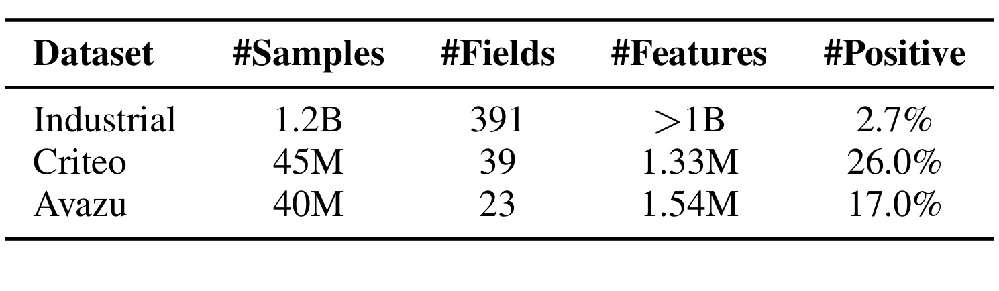
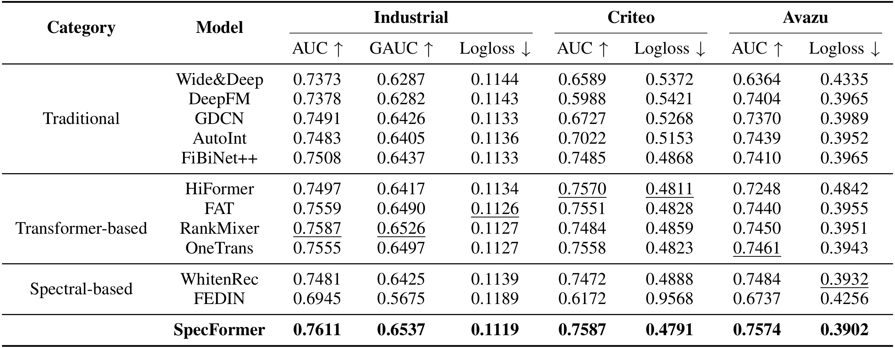
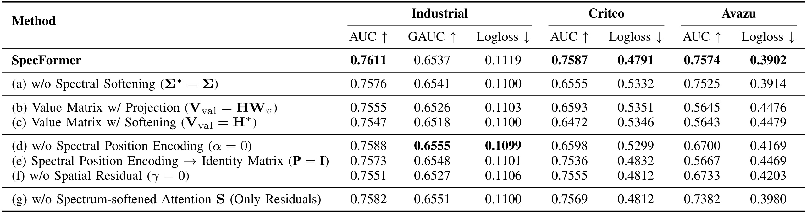
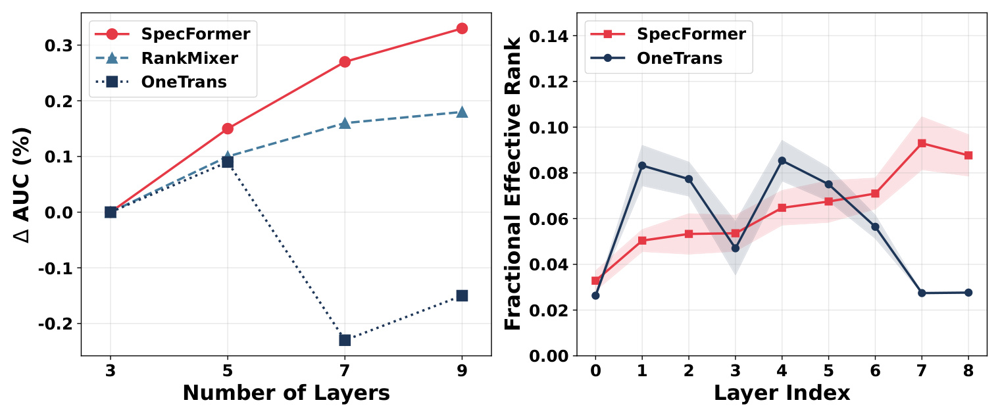
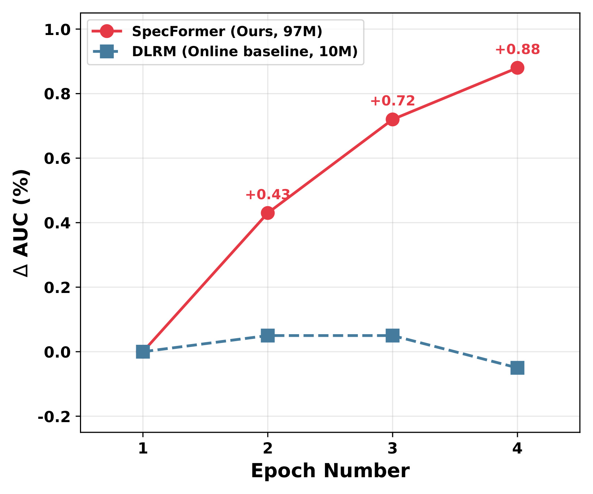
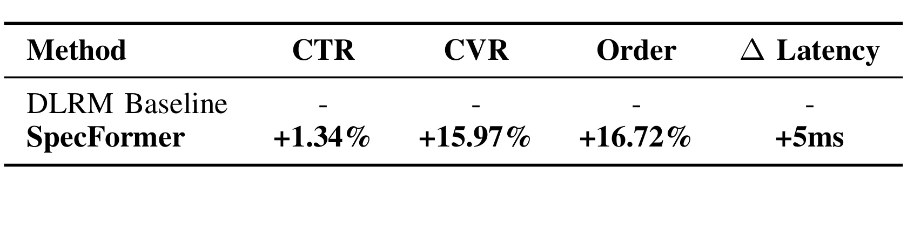

SpecFormer：通过频谱感知 Transformer 缓解推荐中的嵌入与注意力坍塌
这篇 arXiv:2607.24025 由浙江大学 Yu Cui 与阿里巴巴 Yi Xu 共同一作，浙江大学和阿里巴巴团队合作完成；本文阅读的是 2026 年 8 月 3 日更新的 v2 预印本。论文聚焦 CTR 预估中的高阶特征交互：为什么标准 Transformer 在语言模型里可以靠加深获益，到了异构、长尾的推荐特征上却会很早失去有效秩，甚至不如结构更简单的交互模型。作者公开了核心 TensorFlow 实现，但完整数据处理、训练和评测流水线并未一并开放，因此本文会把论文结论、公开代码事实和基于公式的推导分开陈述。
推荐数据的异构与长尾分布让输入嵌入在进入深层交互前就被少数主奇异方向支配；标准自注意力不仅不能自动修复这一问题，反而会在前向中把注意力推向低秩、在反向中让尾部频谱方向得不到有效梯度，形成越堆层越坍塌的闭环。
1. 背景和问题
1.1 为什么推荐里的 Transformer 不像 LLM 那样容易扩深
论文研究的是点击率预估。给定用户、物品、上下文和行为序列等原始字段集合 $\mathcal{F}=\{f_1,\ldots,f_F\}$，模型学习点击概率
这里 $\sigma(\cdot)$ 是 Sigmoid，$f_\theta$ 的核心不是生成下一个词，而是在大量离散字段之间学习足够有区分度的交互。现代工业模型通常先把相关原始特征分组、拼接、切块，再投影为 $L$ 个统一维度的 token，形成 $\mathbf X\in\mathbb R^{L\times D}$；随后用多层交互模块和逐 token 前馈网络更新表示，最后做池化与预测。这个形式和 Transformer 很像，却有两项数据条件与自然语言明显不同。
第一，推荐 token 的语义空间高度异构。用户画像、商品 ID、类目、时间、设备和历史序列并不共享连续、平滑的词语义流形，各字段往往落在彼此隔离的子空间。注意力的点积需要在这些空间之间建立可比较的相似度，一旦主要能量集中在少数公共方向，模型很容易把大量样本映射成相近或过度稀疏的交互模式。第二，推荐特征频次服从极强长尾：头部 ID 接受大量更新，尾部 ID 的观测和梯度都很少。它造成的不是一般意义上的“稀疏”而已，而是整个 token 矩阵的奇异值能量被少数方向垄断。
这也解释了论文为什么不满足于“再加一个更宽的 FFN”。多嵌入或更大 PFFN 可以绕开部分表示退化，却会增加参数和服务成本；白化、正则或 Fourier 变换若只在输入或外部支路处理频谱，也没有直接改变注意力如何计算交互。作者要解决的是注意力内部的反馈机制：输入已经坍塌时，标准 QK 点积和反向梯度会怎样继续放大它，以及能否在不丢掉原始特征内容的前提下让尾部频谱重新进入交互。
1.2 从数据长尾到频谱坍塌
设任一层 token 矩阵为 $\mathbf H\in\mathbb R^{L\times D}$，薄奇异值分解写作
其中 $r=\min(L,D)$ 且 $\sigma_1\ge\cdots\ge\sigma_r\ge0$。论文用累计奇异值能量比
衡量嵌入坍塌。如果很小的 $k$ 就让 $\rho(k)$ 接近 $100\%$，表示高维 token 看似有很多坐标，真正承载变化的却只有少量主方向。长尾特征的低频方向会被压到谱尾，它们不仅弱，而且后续还可能因为梯度不足继续变弱。

Figure 3 的左图给出工业推荐 token 的频次曲线：头部迅速下降后拖出很长的尾部，纵轴还是对数尺度，说明不同 token 接收训练信号的机会相差多个数量级。右图把这种不均衡映射到累计奇异值能量。OneTrans 曲线在极少数奇异值处就接近饱和，意味着原始注意力面对的输入已经接近低维；SpecFormer 的曲线增长更慢，表明更多方向仍保留能量。这里应注意，右图是方法训练后的对照，不是“软化一定导致泛化提升”的独立因果证明；它首先证明的是作者想改变的中间量确实发生了变化，最终价值仍需主结果、消融和层深实验共同支持。图中也没有误差带或跨随机种子结果，因此曲线形状适合作为机制线索，而不能单独用来量化收益置信度。
1.3 注意力坍塌要用有效秩而不是整数秩诊断
整数 rank 对数值扰动很敏感，一个几乎为零的奇异值也可能把矩阵判为满秩。论文因此把注意力分数矩阵 $\mathbf S\in\mathbb R^{L\times L}$ 的奇异值先做 $L_1$ 归一化：
再以谱熵定义有效秩和分数有效秩：
当所有能量都在一个方向时，erank 接近 1；当奇异值近似均匀时，它接近 $r$。ferank 再除以最大秩，使不同 token 数的模型可以放到 $[0,1]$ 上比较。这个指标比“注意力热图看起来均匀或稀疏”更可靠，因为热图形状未必对应可用维度：一张数值上有变化的图，也可能在谱上仍由一个方向主导。
论文的经验现象是，OneTrans 一类标准自注意力推荐模型很早就出现有效秩下滑，继续叠层时性能先升后降；而 LLM 的注意力有效秩虽然也会波动，却没有在同样浅的深度快速归零。作者据此把问题从“推荐 Transformer 调参困难”改写为“输入频谱和注意力传播共同造成的结构性坍塌”。这一改写是全文最重要的贡献：它给出了可以测量、可以干预，也可以在扩深实验里验证的中间机制。
2. 方法
2.1 从标准 CTR Transformer 到频谱坍塌闭环
符号解释： $d$ 是每个切块的原始宽度，$L$ 是 token 数，$D$ 是统一投影维度，$\mathbf H^{(0)}=\mathbf X$。每层通常先做特征交互与残差归一化，再接逐 token 的 PFFN；最终对 token 池化后送入预测 MLP。SpecFormer 不改 tokenizer、PFFN、池化和 CTR 损失，只替换每层的注意力交互。

Figure 4 从左到右给出完整信号流。输入特征被切成 token 后进入 SpecFormer block；中间的注意力模块先对当前 $\mathbf H^{(l)}$ 做 Learnable Spectral Softening，得到频谱更平坦的表示并只用它构造 Q/K；随后在软化域形成 Spectrum-softened Attention；最后把 Taylor 展开的频谱残差加入分数，同时保留一条原空间空间残差。值得关注的是 Value 直接取原始 $\mathbf H^{(l)}$：软化负责“决定从哪里聚合”，原始值负责“聚合什么内容”。这让方法不是把全部表示强行白化，而是把频谱均衡放在路由层，并用两条残差保护主信号与训练稳定性。
符号解释： $\mathbf W_q,\mathbf W_k$ 是 Q/K 投影，$\mathbf M$ 是把投影旋转到右奇异向量基底后的核心矩阵；$R_{ij}$ 汇总至少含一个尾部方向的分数项。在投影范数有界的条件下，作者把余项界为 $|R_{ij}|\le\mathcal O(\epsilon\sigma_1^2)$。直觉是主方向进入 Q 和 K 两次，权重按 $\sigma_1^2$ 放大；任一含尾部方向的交互至少乘上一个小量 $\epsilon$。Softmax 的指数归一化又会放大分数差，注意力便越来越依赖 $\mathbf u_1$。这个命题依赖输入已接近单主方向和权重有界，并不等价于证明所有推荐注意力必然严格 rank-1，但它刻画了坍塌输入为何有自增强倾向。
符号解释： $\mathbf A^1$ 是由主分量分数得到的注意力，$\mathbf g_k$ 是上游梯度在第 $k$ 个左奇异方向上的系数，$\xi_k$ 衡量低通注意力还保留多少该方向。论文借用自注意力低通性质主张尾部有 $\xi_k\ll\xi_1$，于是弱方向既在前向中难以影响交互，又在反向中接收不到足够更新。下一轮嵌入更坍塌，闭环由此形成。
这里要把“理论说明”与“完备证明”分开。余项阶数、Softmax 后的近低秩结构和 $\xi_k$ 的大小都需要附加条件；论文没有证明 SpecFormer 的优化收敛，也没有证明任何数据上软化都会单调提高有效秩。理论真正提供的是设计方向：不要只在输出端惩罚低秩，而要在 Q/K 形成之前改变奇异值相对权重，并为被压制的主谱和原空间另设可控回路。
2.2 Learnable Spectral Softening
符号解释： $a$ 是可学习标量，论文设初值为 0，因此 $\tau$ 从 0.5 开始；$\mathbf\Sigma^{(l)*}$ 是软化后的谱。对于 $\tau<1$，大奇异值的相对压缩更强，小奇异值的相对权重会上升。例如两个奇异值比为 100:1，开平方后变成 10:1；它没有把两者强制变成相同，而是连续调节谱的斜率。
符号解释： $\mathbf H^{(l)*}$ 保持原始左右奇异向量，只改变各方向的尺度，所以它不是任意旋转或重新学习一套嵌入。输入和输出形状都仍为 $L\times D$，能直接替换标准注意力的输入。由于 $a$ 可从数据学习，模型可以在“保留主方向”与“抬升尾方向”之间调节，而不是固定使用完全白化。这一模块有两个边界：若奇异值为零或极小，分数幂、梯度和数值精度都可能不稳定，论文因此没有直接从随机初始化进入完整谱变换，而是设计 warm-up；软化也会削弱真正有用的头部模式，如果只把谱压平而不提供补偿，模型可能提升多样性却损失主信号，后面的 Spectral Residual Position Encoding 正是为此存在。
2.3 Spectrum-softened Attention
符号解释： $\mathbf W_q^{(l)},\mathbf W_k^{(l)}\in\mathbb R^{D\times D}$ 学习软化域的匹配关系；$\mathbf V_{\text{val}}^{(l)}$ 没有软化，也不再乘标准 $\mathbf W_v$。Q/K 决定 token 之间的路由权重，Value 保存被路由的原始内容。这个非对称选择是方法的关键，而不是实现简化。
符号解释： 括号内是软化谱基底中的交互核，左右的 $\mathbf U$ 把它映回 token 空间。标准注意力里对应位置是 $\mathbf\Sigma\mathbf M\mathbf\Sigma$，主方向会以 $\sigma_1^2$ 支配；SpecFormer 改成 $\mathbf\Sigma^*\mathbf M\mathbf\Sigma^*$，使尾部组合的相对权重增大。它并没有直接规定哪些字段应该交互，字段关系仍由 $\mathbf W_q\mathbf W_k^\top$ 和样本表示动态决定。Value 保留原始 $\mathbf H$ 是因为使用 $\mathbf H^*$ 会让聚合内容本身也被重新缩放，可能丢掉头部语义；使用 $\mathbf H\mathbf W_v$ 又增加一次投影并可能把已坍塌表示继续压向少数方向。Table IV 的结果显示，两种替代在 Criteo 和 Avazu 上都出现很大退化，尤其 Avazu AUC 从完整模型的 0.7574 降到约 0.564。尽管该幅度异常大且缺少方差，至少说明论文的“软化路由、保留内容”不是随意选择。
2.4 Spectral Residual Position Encoding 与完整块
符号解释： $\bar\sigma_i\in[0,1]$ 消除样本间绝对尺度差；$\boldsymbol\beta=[\beta_0,\beta_1,\beta_2]^\top$ 是共享可学习系数；$\sigma_1^2$ 把偏置重新锚定到当前层主谱能量；$\mathbf P_{\text{bias}}^{(l)}\in\mathbb R^{L\times L}$ 最终回到 token-token 分数空间。所谓“Position Encoding”不是序列位置，而是各奇异方向在谱序列中的相对地位。
由此 $\mathbf P=\sigma_1^2\mathbf f\mathbf f^\top$，在旋转回 $\mathbf U$ 之前至多 rank-1。也就是说，正文把 $\mathbf P$ 称为可学习 $r\times r$ 交互矩阵，但当前可分离参数化并不能自由表达任意两两谱关系；它更像一条对主谱形状可学习的低秩锚点。这是依据公式作出的推导，不是作者明示的结论。它既有参数少、偏置稳定的优点，也可能限制频谱间更复杂的非对称关系。
符号解释： 带波浪号的 Q/K 投影与软化域投影独立，使原空间信号和频谱路径拥有分开的梯度通道；它既保留未经重加权的交互，也承担 warm-up 阶段建立稳定表示的任务。$\alpha$ 控制频谱结构残差，$\gamma$ 控制原空间残差，$\mathbf S^{(l)}$ 是样本相关的软化域动态注意力。论文符号表称 $\alpha,\gamma$ 为可学习参数，公式后的文字称其为超参数，敏感性实验又像固定取值；公开代码则创建可训练标量并从配置值初始化。三种表述没有完全对齐，因此复现时必须明确自己采用哪一种。
符号解释： 第一条是注意力输出与层输入的残差，第二条是逐 token FFN 残差；最终跨 token 均值池化后进入预测 MLP。注意力负责跨字段交互，PFFN 用不同参数维护异构 token 自身的变换，二者分工与 RankMixer、OneTrans 一类现代 CTR Transformer 的主干保持可比。
2.5 两阶段训练、推理代价与公开代码差异
SpecFormer 不是从随机初始化直接开启完整 SVD 路径。第一阶段用 5% 训练数据，只通过 Spatial Residual Term 预热嵌入；第二阶段再用剩余 95% 数据训练完整网络，包括频谱软化。作者的解释是随机嵌入的奇异值分布受噪声支配、条件数差，过早做分数幂可能带来数值不稳定。warm-up 先把表示推到较有结构的特征流形，再进行频域细化。基线则按常规高斯初始化，用 100% 数据单阶段训练。因而比较虽然使用相同总数据，却不是完全相同的优化路径；方法收益里可能同时包含架构和课程式训练的贡献。工业数据的 token 维度为 304、batch size 为 1024，使用 Adagrad，学习率从 $\{0.005,0.01,0.05,0.1\}$ 搜索；Criteo 与 Avazu 的维度分别为 312 和 176，batch size 为 512，学习率候选再加入 0.001 与 0.002。实验在 NVIDIA L20 上以 TensorFlow 实现。论文没有给随机种子、重复次数、早停、数据划分和每个模型最终超参，这限制了严格复现。按架构，推理阶段仍需对每层、每个输入相关的 $\mathbf H^{(l)}$ 做 SVD；论文没有描述把它离线缓存或蒸馏掉。若薄 SVD 输入为 $L\times D$，其常见复杂度为
在论文常见的 $L<D$ 下约为 $\mathcal O(L^2D)$。Q/K 投影与标准注意力还需约 $\mathcal O(LD^2+L^2D)$。若直接物化 $\mathbf U\mathbf P\mathbf U^\top$，还会有与 $r$ 相关的矩阵乘开销；利用前述 $\mathbf P$ 的外积结构理论上可以简化，但公开实现看起来仍会物化矩阵。以上是根据公式作出的复杂度推导，论文没有给正式 Big-O、显存或离线吞吐表。
论文给出的 官方代码 只包含核心模块和算子，而不是端到端复现包。实现里还有正文未说明的数值处理：对 NaN/Inf 做净化与裁剪、SVD 前做行归一化、对部分 SVD 输出停止梯度、把可学习 $\tau$ 截到 $[0.1,0.9]$，并在注意力分支加入 $1/\sqrt{d_h}$ 缩放；论文公式为简洁省略了该缩放。代码路径似乎还会为软化 Q/K 和频谱偏置分别求一次 SVD。复现时若只照公式写，得到的稳定性、梯度和成本都可能与作者实现不同；仓库也未见完整数据脚本、训练入口、评测脚本和许可证。
3. 实验结果
3.1 数据集、基线与评测口径
实验覆盖一个工业数据集和两个公开 CTR 数据集。工业数据来自大型国际电商展示广告系统，约 12 亿曝光、超过 10 亿离散特征、正样本率 2.7%，行为序列最长 256。Criteo 有 4500 万样本、39 个字段、133 万特征，正样本率 26%；Avazu 有 4000 万样本、23 个字段、154 万特征，正样本率 17%。公开集可以验证通用 CTR 表现，但最能体现长序列、超大词表和线上价值的证据仍来自不可公开的工业数据。

Table II 把四个关键口径放在一起：样本、字段、特征基数和正样本比例。这里有一个必须保留的内部冲突：表格写工业数据有 391 个 Fields，而数据集正文写“38 feature fields”；前文关于 token 化的注释又暗示可能把 391 个原始特征划成 38 个语义字段。最合理的解释是 raw feature 与 grouped token 的层级不同，但论文没有明确修正文案，因此不能把 38 和 391 当作同一口径。该差异还影响 $L$、SVD 规模和计算量判断，复现者应向作者确认最终 token 数。
基线分三类：Wide&Deep、DeepFM、GDCN、AutoInt、FiBiNet++ 等传统交互；HiFormer、FAT、RankMixer、OneTrans 等 Transformer 交互；WhitenRec 与 FEDIN 等频谱路线。基线说明还列出 MaskNet，却未在主表报告；主表包含 Wide&Deep，基线段又没有对应介绍。指标为 AUC、Logloss，工业集再报告按用户聚合的 GAUC。作者引用工业经验称 0.001 AUC/GAUC 已有业务意义，但离线表没有标准差、重复次数或显著性检验，所以“超过 0.001”只能作工程尺度参考，不能替代统计不确定性。
3.2 离线主结果
SpecFormer 在 Table III 的所有七列都取得最佳值：工业 AUC/GAUC/Logloss 为 0.7611/0.6537/0.1119；Criteo AUC/Logloss 为 0.7587/0.4791；Avazu 为 0.7574/0.3902。与每一列最强的非 SpecFormer 结果相比，绝对差分别为工业 AUC +0.0024、GAUC +0.0011、Logloss 降低 0.0007，Criteo AUC +0.0017、Logloss 降低 0.0020，Avazu AUC +0.0090、Logloss 降低 0.0030。

Table III 支持三个较稳妥的观察。第一，工业数据上 RankMixer 是强对手：它用更简单的 token mixing 避免标准注意力坍塌，AUC 达 0.7587；SpecFormer 再提升 0.0024，说明恢复动态注意力表达力可能比完全绕开注意力更有收益。第二，OneTrans 在三套数据都没有稳定压过简单交互模型，符合论文“标准注意力碰到推荐频谱瓶颈”的动机。第三，频谱方法不是做频域变换就会有效：WhitenRec 尚有竞争力，FEDIN 在 Criteo Logloss 甚至到 0.9568，说明静态白化或 Fourier 全局交互不能替代样本相关的非线性注意力。
也不应把所有差值都归因于三个新模块。SpecFormer 采用两阶段 warm-up，基线单阶段训练；模型参数量、每个基线最终超参和重复试验未完整披露。尤其 Avazu 上部分基线结果跨度很大，HiFormer Logloss 为 0.4842，而其他较强方法约 0.39；没有误差条时很难判断实现公平性。主表证明的是作者实现与设定下 SpecFormer 占优，尚不足以单独证明频谱闭环就是全部提升来源。
3.3 消融实验
消融覆盖七种改动：关闭奇异值软化；Value 改成 $\mathbf H\mathbf W_v$；Value 改成 $\mathbf H^*$；去掉频谱位置编码；把谱映射矩阵替换为单位阵；去掉原空间残差；以及只保留两条残差、移除动态软化域注意力。公共数据对设计选择非常敏感：Criteo 在无软化时 AUC 从 0.7587 降到 0.6555；Value 用投影或软化表示时分别只有 0.6593 和 0.6472。Avazu 上这两种 Value 设计约为 0.564，频谱位置编码改为单位阵也只有 0.5667。

Table IV 最重要的不是“每去掉一项都变差”，而是变化并不跨指标单调。完整模型工业 GAUC 为 0.6537、Logloss 为 0.1119；无软化变体反而是 0.6541 和 0.1100，去掉频谱位置编码达到 0.6555 和 0.1099，均在这两列优于完整模型。作者所说的“灾难性下降”主要成立于工业 AUC 和公开数据，不能扩展成所有指标一致下降。与此同时，移除动态 $\mathbf S$、只用残差时 Criteo AUC 仍有 0.7569，说明残差本身很强；完整动态注意力的边际价值需要结合 Avazu 0.7382 对 0.7574 以及主表综合判断。
消融也留下两项待验证问题。其一，没有报告“只做 warm-up 但使用标准注意力”的控制组，无法分离两阶段优化收益。其二，未给多随机种子方差，像工业 GAUC 千分之一量级的交叉可能只是波动。更理想的实验应固定参数量、训练预算和 warm-up，并同时报告 AUC、GAUC、Logloss、ferank 的均值与方差，才能把“提高频谱有效秩”与“提高业务目标”更严格地联系起来。
3.4 深度扩展与频谱有效秩
作者在工业集把 RankMixer、OneTrans 和 SpecFormer 从 3 层扩到 5、7、9 层。左图显示 SpecFormer 和 RankMixer 的 AUC 增益随深度继续上升，而 OneTrans 在 5 层附近达到局部高点后，7 层出现显著负增益，9 层仍未恢复。右图逐层画出 OneTrans 与 SpecFormer 的注意力 ferank：OneTrans 前几层剧烈波动，深层降到很低；SpecFormer 总体向上，深层仍保留更多有效方向。

Figure 5 是论文机制证据里最有说服力的一张，因为它没有只比较最终 AUC，而是把性能曲线和中间频谱指标并排。若 SpecFormer 只是增加参数但没有改变坍塌，深层 ferank 不应随之持续改善；若 ferank 改善却不带来性能，机制又缺少业务关联。图里两者同向支持作者叙事。不过曲线没有精确点值和误差条，不能从图像估读并写成精确提升；也没有给 11 层以上或不同宽度的 scaling law。现有证据只能说明 3 至 9 层工业设定下趋势成立。
RankMixer 同样随深度提升，却没有标准注意力的动态谱交互，这提供了一个有价值的对照：避免坍塌并不只有 SpecFormer 一条路。SpecFormer 曲线更陡，作者据此认为动态频谱注意力兼得表达力和稳定性。更严格的后续实验应对齐参数量、FLOPs 和延迟，比较“简单且可扩深”与“更复杂但收益更高”的 Pareto 前沿。
3.5 多轮训练与系统效率
线上部署前，团队利用 SpecFormer 的容量做多 epoch 训练，并在下一轮继承上一轮优化参数和预热嵌入。Figure 7 图例显示 SpecFormer 约 97M 参数，而生产 DLRM 基线约 10M；红线在第 2、3、4 轮分别标注 +0.43、+0.72、+0.88 的 AUC 增益，DLRM 很快饱和并在第 4 轮转负。

Figure 7 同时说明了收益和成本：SpecFormer 并不是用相近规模替换 DLRM，而是参数量接近十倍的大模型；其多轮收益可能来自频谱稳定性、容量扩大和参数继承的组合。还存在一处未解释冲突：正文称部署的 3-epoch 模型相对 DLRM 获得 0.92% AUC 增益，但图中第 3 轮明确标 +0.72，第 4 轮才是 +0.88。两者可能使用不同实验口径或版本，论文没有说明，所以应分别保留，不能选择更高数字合并。
为控制系统成本，作者采用 in-batch SVD、Distributed Dynamic Embedding 分片、coalesced lookup、FlashAttention 和 FP16。论文称合并查表把 embedding query 频率降到基线的 8%，FlashAttention 把每层注意力开销降低 40%，组合优化使训练效率总体提升 35%。这些数字描述的是整套工程优化，不能解释为频谱软化本身“提速 35%”；也没有给未经优化的 SpecFormer 吞吐、显存和绝对训练时长。推理侧最终相对 DLRM 增加 5ms，说明 SVD 与更大模型成本被控制在服务可接受范围，但具体基线延迟和 P99 未披露。
3.6 在线 A/B 实验
线上实验发生在阿里巴巴电商广告平台，时间为 2026 年 6 月 1 日至 10 日，覆盖 10% 生产流量。用户通过正交哈希随机进入优化后的 DLRM 对照组或 SpecFormer 实验组。论文报告 CTR +1.34%、CVR +15.97%、订单 +16.72%，推理延迟增加 5ms；Table V 声明所有收益均有 $p<0.05$。

Table V 说明方法已经超出离线论文原型：CTR、转化和订单同时上升，尤其订单增幅大于点击增幅，表明收益并非只把更多低意向点击推到前面。可是表格只给相对 lift，没有曝光、用户、点击和订单绝对量，也没有置信区间、多重检验处理、分桶健康度或分人群结果。10 天窗口能覆盖工作日与周末，却不足以判断长期新鲜度、模型漂移和尾部用户体验。最稳妥的结论是：作者报告了一次规模可观、统计显著的短期线上成功；它增强了工业可行性，但仍不是对所有推荐场景的普遍保证。还应看到 CVR 与订单提升远高于 CTR，若没有绝对基数、归因窗口和去重口径，就无法判断增量来自排序质量、流量构成变化还是转化归因差异；复现实验需把这些业务定义预注册。
4. 总结
4.1 我的判断
SpecFormer 最有价值之处不是“把 SVD 塞进 Transformer”，而是建立了一条可观测的故障链：推荐数据长尾与异构 $\rightarrow$ 输入奇异值集中 $\rightarrow$ QK 分数由主方向支配 $\rightarrow$ 注意力低通与尾部梯度饥饿 $\rightarrow$ 下一轮嵌入进一步坍塌。方法的三部分分别对应这条链的三个断点：幂律软化重分配 Q/K 的频谱能量，原始 Value 保住内容，频谱与空间残差把主信号和稳定梯度补回来。离线、层深和线上证据方向一致，使它比单纯加正则或换 token mixer 更完整。
但论文还没有把“频谱有效秩提高”证明为性能提升的充分条件。理论建立在近 rank-1、投影有界和低通衰减等假设上；实验缺少方差与同训练协议控制；公开代码与公式也存在重要差别。因此我会把它视为值得工业 CTR 团队复现的强机制假说，而不是已经封闭论证的通用 Transformer scaling 定律。
4.2 工程复现建议
复现应先锁定四个口径。第一，明确 391 个原始字段怎样分组为正文所说的 38 个 token，否则 $L$、SVD 和延迟都不可比。第二，做四组严格控制：标准注意力、仅 warm-up、仅频谱软化、完整 SpecFormer，统一参数量和数据顺序。第三，同时记录 AUC/GAUC/Logloss、$\rho(k)$、ferank、梯度在各奇异方向的范数，以及训练吞吐、显存、P50/P99 延迟。第四，对齐公开代码中的数值净化、stop-gradient、$\tau$ 截断、注意力缩放和 SVD 次数，并分别测试 $\alpha,\gamma$ 固定与可训练两种定义。
上线前还应做尾部切片：按特征频次、用户活跃度、序列长度和冷启动程度观察收益。如果频谱软化的核心作用真是恢复尾部方向，它应在长尾和异构度更高的切片上体现更明显改善；若收益只集中在头部，机制解释就需要重审。
4.3 局限与后续跟进
现有证据至少有八项边界：任务只覆盖 CTR 特征交互，没有 top-k 召回、序列推荐或生成式推荐指标；公开数据只有两套；最大规模数据和线上平台不可复现；离线实验缺少划分、种子、重复次数、方差与显著性；SVD 的绝对吞吐、显存和 P99 未报告；两阶段 warm-up 使架构对比不完全等协议；频谱残差按公式至多 rank-1，表达范围可能有限；论文、图和代码在字段数、超参取值、三轮收益、注意力缩放及参数可学习性上存在冲突。线上实验也只有 10 天相对 lift，缺少长期与分群结果。
后续最值得跟进四条线：用多随机种子和统一 warm-up 重做消融；将 $\mathbf P$ 的低秩结构与更高秩、非对称谱映射比较；探索近似或增量 SVD，给出质量—吞吐—延迟 Pareto 曲线；把同一坍塌诊断迁移到序列推荐、召回和多任务排序，检验它究竟是 CTR token 化的局部问题，还是推荐 Transformer 的普遍瓶颈。只有这些结果补齐后，才能判断 SpecFormer 是一套有效工业模块，还是更广义“频谱感知推荐基础层”的起点。